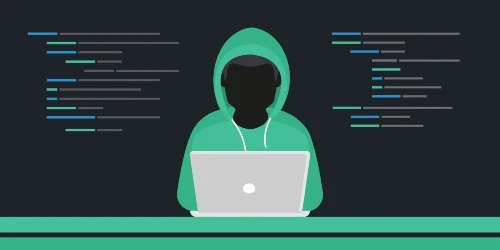

How Individuals and Families can Practice Internet Safety
" The Internet is a wonderful tool and resource for families, but caution must be exercised in order to protect families and individuals from the potential dangers that are present online.” - LDS Services 2
Though it may seem very discouraging and hopeless to some hearing about the different terms such as “spam”, “hacker” or “virus” there is actually plenty you can do as an individual to protect yourself and your family in the online world. There is an old saying that says that knowledge is the best defense, and if you put in practice the knowledge you learn about staying safe on the internet, you will be safer than you have before while surfing the web.
Threat Actors
A threat actor is someone that has intent to cause harm or commit criminal activity online. This might include stealing someone’s personal info, locking or stealing important files on one’s computer for a ransom, or falsely advertising a real product with intent of stealing one’s credit card info.
Many people refer to threat actors as “hackers” or simply people that know computers so well that they can steal people’s info with just the click of a mouse. Though there are certainly people that can write malicious code to do things like that, a lot of “hacking” is done by people who use mental techniques to try and manipulate or trick people into giving up the info or access themselves. This is known as social engineering.
What to Look out for
An example of social engineering might be someone who is messaging you on Facebook asking for money. They might be acting as if they were someone in need, or they may even be posing as a family member or friend, but are using a fake account. Though it’s important to help those in need, and especially be there for family members and friends, it’s also important to verify that the person actually needs help and they are not just trying to scam you. If they are posing as a family member or friend, it would be beneficial to contact that person directly to make sure it was actually them who sent the message.
There may be instances where someone may not be reaching out to you, but you may come across an ad or an email that says you are a lucky winner, or that you can win a free ipad by completing a survey for example. If it seems too good to be true, it is almost certainly too good to be true. Most of these ads or emails will lead you to download a type of software called malware. If downloaded onto your computer, malware can cause important data to be deleted or stolen. A virus is a type of malware that can damage, erase, or reformat your hard drive. 3 There may be times where a virus or scam isn't always obvious. A good defense against this is to simply have backups for your important files. This could be on a cloud service or a device such as a USB or SD card.

How to help your kids practice internet safety
Nowadays, kids are all over the internet, using social media and playing games online. Unfortunately, there are many people who like to trick kids or act as potential friends with the intention of getting them to reveal personal information such as what school they go to or what their home address is. It is important to teach your kids to not give away any sensitive information without your permission. Another thing that might be beneficial in helping your kids with online safety is to put the computer in an open high traffic area such as the kitchen or family room where they usually won’t be by themselves. 2
Ideas for Family Activities
“The Holy Ghost guides us to the truth and bears witness of that truth (see John 16:13). He enlightens our minds, quickens our understandings, and touches our hearts with revelation from God, the source of all truth. The Holy Ghost purifies our hearts. He inspires in us a desire to live by truth, and He whispers to us ways to do this. Truly, “the Holy Ghost … shall teach [us] all things” John 14:26.
"For these reasons, in our efforts to live, learn, and teach the gospel, we should first and foremost seek the companionship of the Spirit. This goal should govern our choices and guide our thoughts and actions. We should seek after whatever invites the influence of the Spirit and reject whatever drives that influence away—for we know that if we can be worthy of the presence of the Holy Ghost, we can also be worthy to live in the presence of Heavenly Father and His Son, Jesus Christ.” -Come Follow Me1
For each topic, you can follow in a simple format.
1. Watch the appropriate video
2. Do the activity with your family
Making Strong Passwords
VIDEO
For kids and all ages. If the youngest family member in your family is pre-teenage years, or you have a large family group, we recommend watching this video.
For Teens and older family members. If the youngest family member in your family is a teenager, then we recommend this video.
ACTIVITY
Now that we have watched the video, how can your family members make stronger passwords? You can go to
this website to find out how fast it takes for a computer to crack what you type in, if it was a
password.
‚ö†Ô∏èüö®DON‚ÄôT TYPE YOUR PERSONAL PASSWORD HERE, USE WITH CAUTION.üö®‚ö†Ô∏è
How Secure Is My Password? | Password Strength Checker
Be careful, and make sure to remember, threat actors are always evolving with more and more information available to them. One example is a cracked password list. There are many lists on the internet that contain passwords that've been “hacked” or found by cracking into company’s databases, personal social media accounts, and from many other places.
This is an article that introduces us to the largest known list containing more than 1.4 BILLION passwords for threat actors to use and harm others’ private information.
Collection of 1.4 Billion Plain-Text Leaked Passwords Found Circulating Online
Backing up Your Data
This video explores the different types of storage devices we’re familiar with.
ACTIVITY
Scavenger hunt!
What storage devices do you have around your home? Take 1-3 min for the family to go around the house and bring different types of storage devices!
Storage devices are all around us. We need them to keep all the texts, memos, pictures, apps, and any data in our home, it all needs a place to stay. These physical devices in our home help us keep all the information we want to save, but there’s also a new technology that is becoming more and more popular and accessible to us. It’s called “the cloud”.
Videos for kids and all ages
Cloud explained by kids! This is an adorable video of kids trying to explain the cloud.
What’s “cloud computing?” This video explains very simply what happens when we upload our pictures “to the cloud”.
ACTIVITY
After watching both videos, just like the kids in the first video, try and draw a graph of how a cloud might work when we upload(send it to a different computer from your computer) data on the internet.
It’s essential to backup our data! When you backup data(pictures, texts, any saved information on your devices) manually, you can purchase another storage device and copy all of it, or some parts of your main storage device. That could be expensive but it’s effective. Cloud is a very useful method of storing data! Any device that’s supported can access these clouds, and because it’s not limited to one storage device in our device, we can access it on our Computer at home, at work, our smartphones, and even on these toasters.
Discuss with your family about moments where you lost something, it doesn’t have to be data. Say if you forgot your travel bag at the airport when you hopped on a plane!! Or you lost your favorite family picture. Wouldn’t it make you feel safer if you had an extra travel bag with the exact same things inside? Or multiple copies of that same family picture? Backing up data is doing exactly that, but with your important informations you keep on different devices.
Discussion
Read these paragraphs from Fortifying Our Homes for The Latter-days7
“In Alma 50:1–4, Mormon explains how Captain Moroni built fortifications to protect his people from physical bondage. Please pay particular attention to references such as ‘digging up heaps of earth, timbers, frame of pickets and towers.’
In the spirit of Nephi’s counsel to, ‘liken all scriptures unto us, that it might be for our profit and learning,’2 I believe Captain Moroni’s fortifications and strategies to avoid physical bondage in 72 B.C. are insightful as we look to fortify our own homes and families in these latter days.
Like Captain Moroni, who did not stop making preparations to defend his people from their enemies (Amalickiah), President Nelson in our day continues to seek revelation from the Lord to defend us from our enemy (Satan). The digging of heaps of earth to protect the city was a physical labour. Can you imagine the many hours of extreme physical exertion the people of Moroni would have gone through to do what they did? All without the aid of modern excavating equipment we have at our disposal today. The heaps of earth we are required to dig in order to fortify our homes today require spiritual exertion. It will take faith and work, humility, obedience, love, unity, diligence, commitment, prayer and charity to mention only some Christlike attributes.” - Fortifying our Homes in The Latter-days
With all the learning you and your family were able to take away from this lesson, take some time to discuss how these paragraphs could correlate with bringing security to our information online.
Tips for the discussion:
- How did Moroni tackle the upcoming threats they would face? Was it easy?
- Why is this similar to how we prepare for the worst that could happen online?
- How does the scriptures help us with keeping our information safe?
- Why would our Heavenly Father want us to learn CyberSecurity?
Additional Resources
As we prepare with caution, and with all the information available for us, we can be ready to treat actors that are actively trying to find out who we are, and harm us on the internet. Elder Bednar invited us to use the internet as tools to share the gospel.12
“Imagine the impact we can have as hundreds of thousands and millions of members of the Lord’s restored Church contribute in seemingly small ways to the rising floodwaters. May our many small, individual efforts produce a steady rainfall of righteousness and truth that gradually swells a multitude of streams and rivers—and ultimately becomes a flood that sweeps the earth. “Wherefore, be not weary in well-doing, for ye are laying the foundation of a great work. And out of small things proceedeth that which is great” (D&C 64:33).”
We are to use the internet as a tool to share the Gospel. But that doesn’t mean it’s an easy and always secure environment. He continues in the same talk saying,
“We have been and are blessed in so many ways; and where much is given, much is required. I pray that you may come to understand more fully the spiritual significance and blessing of living in the dispensation of the fulness of times, that you may have eyes to see clearly both the possibilities and the pitfalls of the remarkable technologies that are available to us today, that you may increase in your capacity to use these inspired tools appropriately, and that you may receive inspiration and guidance about the role you should play in helping to sweep the earth as with a flood of truth and righteousness. As you press forward in this holy work, I promise you will be blessed in mortality in the individual, specific, and necessary ways that will prepare you for eternity.”
As God’s children, much is required from us to share the Gospel throughout our lives. We promise you that as you increase your CyberSecurity, you will have much more freedom in our technology laced day to day lives, and Gospel sharing opportunities.
Resources
- “Come Follow Me Old Testament 2022" - Conversion Is Our Goal - "https://www.churchofjesuschrist.org/study/manual/come-follow-me-for-individuals-and-families-old-testament-2022/intro?lang=eng"
- “Internet Safety” - LDS Family Services - "https://www.churchofjesuschrist.org/topics/pornography/audiences/individuals/internet-safety?lang=eng"
- “National Cybersecurity Alliance" - How to Tell If Your Computer Has a Virus and What to Do About It "https://staysafeonline.org/blog/how-to-tell-if-your-computer-has-a-virus-what-to-do-about-it/#:~:text=A%20virus%20can%20damage%20programs,steal%20or%20destroy%20your%20data."
- “Strong Passwords” - First American YouTube video https://www.youtube.com/watch?v=9LxdtaSvQ3I
- “Tech Tips: How to create a strong password.” - Best Buy YouTube Video https://www.youtube.com/watch?v=3f0u-vw58A0
- “How secure is my password?” - security.org https://www.security.org/how-secure-is-my-password/
- “Fortifying our Homes in The Latter-days” - Elder Paul Lekias, Area seventy https://www.churchofjesuschrist.org/study/ensign/2019/06/nzl-eng-local-pages/local-news-001?lang=eng
- “Collection of 1.4 Billion Plain-Text Leaked Passwords Found Circulating Online” - Mohit Kumar on the Hacker News https://thehackernews.com/2017/12/data-breach-password-list.html
- “Storage Devices | Computer Knowledge” - BluePrint Digital YouTube video https://www.youtube.com/watch?v=YVG48F-zqPM
- “The Cloud | Kids Explain IT | Worksighted” - Worksighted YouTube video https://www.youtube.com/watch?v=ad-NTOuye4I
- “Cloud Computing - How it all works” - Mihai Tanase YouTube video https://www.youtube.com/watch?v=TTNgV0O_oTg
- “Flood the Earth through Social Media” - By Elder David A. Bednar of the Quorum of the Twelve Apostles https://www.churchofjesuschrist.org/study/liahona/2015/08/youth/flood-the-earth-through-social-media?lang=eng